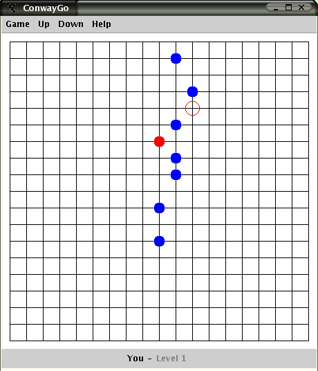

 ConwayGo, also called philosophers' football, is a simple board game for two players, which is played on a Go board, but hasn't got anything to do with the famous game Go. The goal is to move a ball to the base line of the enemy. It was invented by the english mathematician John Conway, the creator of the 'Game of Life'.
This program is written in Java, it should run in all graphical environments. It contains four different computer engines for playing, but if that's not enough for you, write your own engine and let it play against the predefined ones!
Author: